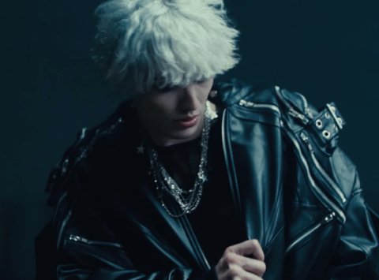
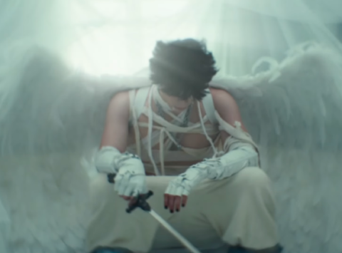
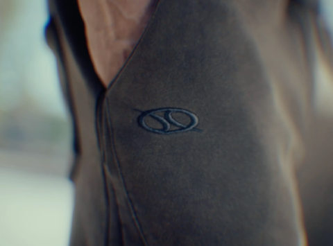
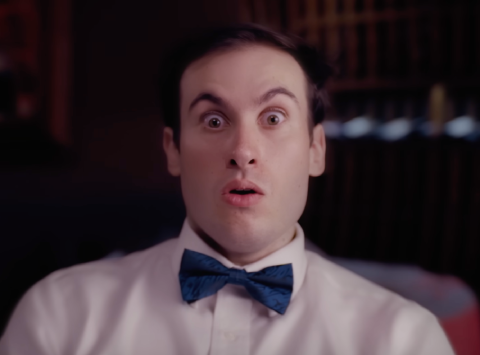

Sound Design
Another field that I specialize in is diegetic and non-diegetic sound design to enhance the quality of visual media projects. Since I started in 2024, I have worked on more than a dozen music videos, various clothing commercials, and many short films.

The music video for @carringtonusa's song "mercedes," called for various textural and ambient sounds, as well as the sounds of his clothings and chains rustling as he moved. I wanted to capture the sleek, clean aesthetic of the car and song through the sound design.

My sound design for @carringtonusa's "even in hell," music video contrasted dark tones and glitches with bright shimmers. An element that was especially fun to work on was the sword duel towards the end. The sound design in this section greatly enhances the overall quality of the video.

This clothing commercial for the Duality brand was practically a short film. My job was to add sounds for everything, ranging from bed sheets rustling and brushing teeth sounds to buses driving and lifting weight sounds. Many of the sounds in this video were recorded as live foley in my studio, rather than being pulled from sound banks.

@nvtehirsch's short film, "The 42 Date," for @42ceo was an especially fun project to work on. My job entailed recording and mixing dinner table sounds, wala of extras in the background talking, audio remixing, and manipulating dialogue audio for a particular section of the video to add a comedic effect.